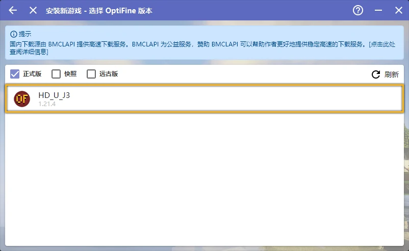

安装游戏、加载器和模组
安装 Java
推荐安装 GraalVM JDK。
在页面上展开第一项 Java 版本，对于 JE 1.18 及以前的版本，选择
Java 21，否则选择Java 23。展开第二项，根据你的系统选择版本，如果你不确定且不是苹果用户，选择
Windows x64，然后点击Download。
下载之后，解压到任意位置（推荐解压到
C:\Program Files\Java\方便管理），并在开始菜单中搜索path，打开编辑系统环境变量。对于其他系统用户，请自行搜索如何修改。
选择
高级>环境变量…>系统变量，找到变量名为Path的变量。选择
编辑>新建，然后键入<你的解压路径>\bin并保存。
获取启动器
- 官方启动器
没有特色就是最大的特色。 你猜为什么这么多第三方启动器？
不支持离线模式，不支持嵌入式安装。
未购买前只能游玩试玩模式
官方洁癖专用启动器
- HMCL 启动器
支持启动器内下载 CurseForge 和 Modrinth 上的模组
支持嵌入式安装加载器，且可随意更换
支持离线模式和第三方验证服务器
支持导入整合包
镜像源加速下载
国产启动器
- PCL 2 启动器
支持启动器内下载 CurseForge 和 Modrinth 上的模组
支持嵌入式安装加载器（不可更换）
支持离线模式和第三方验证服务器
支持导入整合包
镜像源加速下载
国产启动器
也许无聊的时候可以玩玩启动器？
- Multi MC 启动器
支持在启动器内安装加载器
支持导入整合包
便捷的版本管理
什么是离线模式？
离线模式下无法访问开启了正版验证的服务器和领域服，无法接入聊天审查，无法设置自定义皮肤（除非使用第三方验证服务器或更改资源包），本质上就是盗版模式。
什么是嵌入式安装？
嵌入式安装需要启动器支持。可以将安装了加载器的版本和原版合并为同一个版本。
安装游戏
要安装哪一个光影加载器？
如果你是新手，可以先尝试安装最简单的仅安装 OptiFine。
目前有最新 OptiFine 的游戏版本是 JE 1.21.4 ，最新的 OptiFine 版本是 J3 。
需要安装其他模组吗？
打开启动器，点击
下载。
选择游戏版本，需要与 OptiFine 所支持的版本一致。

有时候 OptiFine 可能没有及时更新，你可以前往 OptiFine 官网 确认。
选择
OptiFine。
选择最新版的 OptiFine 。
 回到启动器主页，点击
启动游戏即可。若想配置启动选项，请参阅下文。
部分 Forge 模组可能和 OptiFine 存在未知冲突。
如果你的游戏无法启动，请尝试删除其他模组或卸载 Forge 改用纯净安装。
前往 OptiFine 官网 获取 OptiFine，并同时注意其所支持的最新游戏版本。

打开启动器，点击
下载。选择游戏版本，需要与 OptiFine 所支持的版本一致。
选择
Forge。
选择 OptiFine 对应版本的 Forge 。

点击
安装然后等待完成。回到主界面，点击游戏版本

选择
模组管理，将下载好的 OptiFine 拖入。
回到启动器主页，点击
启动游戏即可。若想配置启动选项，请参阅下文。
要想在 Fabric 上运行 OptiFine 需要 OptiFabric 作为桥梁。兼容性较差，与多数模组存在冲突。
如果你的游戏无法启动，请尝试删除其他模组或卸载 Fabric 改用纯净安装。
前往 OptiFabric 的 CurseForge 页面 获取 OptiFabric，并同时注意其所支持的最新游戏版本（你也可以在启动器中直接下载）。

前往 OptiFabric 的 CurseForge 页面 获取 OptiFine，并同时注意下载对应 OptiFabirc 所支持的最新游戏版本。
打开启动器，点击
下载。选择游戏版本，需要与 OptiFabric 和 OptiFine 所支持的版本一致。
选择
Fabric。
选择最新版的 Fabric 。

选择
Fabric API。
选择最新版的 Fabric API 。

点击
安装然后等待完成。回到主界面，点击游戏版本

选择
模组管理，将下载好的 OptiFabric 和 OptiFine 拖入。
回到启动器主页，点击
启动游戏即可。若想配置启动选项，请参阅下文。
Iris 能在非 Forge 的加载器环境下运行，且与模组的兼容性较好，这里以 Fabric 作为演示。
Iris 对一些光影存在兼容性问题，若你想用的光影没有声明需要 Iris 独占特性，我们建议你安装 OptiFine。
若你需要 OptiFine 的其他功能，参阅 拼好 Fine。
若你想要在 Forge 下运行光影且其他模组与 OptiFine 存在冲突，可以尝试 Oculus。
打开启动器，点击
下载。选择游戏版本，需要与 Iris 所支持的版本一致。
有时候 Iris 可能没有及时更新，你可以前往 Iris 的 Modrinth 页面 确认。
选择
Fabric。选择最新版的 Fabric 。
选择
Fabric API。选择最新版的 Fabric API 。
点击
安装然后等待完成。回到主菜单，再次点击
下载。选择
模组，确保游戏是刚才下载的版本，将下载源切换到Modrinth，在名称处键入Iris进行搜索，然后选择搜索结果的Iris Shaders。
点击
推荐版本，然后安装必须的前置模组，最后点击安装到当前版本。
回到启动器主页，点击
启动游戏即可。若想配置启动选项，请参阅下文。
不是哥们？这可跑不了绝大部分光影哦，你自己想清楚。
打开启动器，点击
下载。选择游戏版本，通常选择最新正式版即可。
点击
安装然后等待完成。回到启动器主页，点击
启动游戏即可。若想配置启动选项，请参阅下文。
包括 Canvas、Vulkanite、Oculus 等加载器均可参考 Iris 的安装方案，只需要在最后下载对应模组即可。
我们在此给出各加载器的官方网站，以便你手动下载：
安装模组
安装任一加载器后将对应加载器的模组放入 <资源文件路径>\mods\ 下即可，资源路径请参考下文检查你是否开启了版本独立，或在启动器中直接打开模组文件夹。
配置游戏
点击版本进入游戏管理。

如果你的游戏目录有其他游戏版本，并且你希望单独对这个版本进行设置，勾选
启用游戏特定设置。否则，点击
编辑全局版本设置。

这里简单列举一下这个页面各个选项的作用
- Java 路径
决定你的游戏所用的 Java，确保你按照 前文 所述，配置好了 Java，然后选择
自动选择合适的 Java。- 版本隔离
决定你的游戏文件存取位置，更改此选项之后需要手动将资源文件（光影、资源包、模组、存档）移至更改后的位置。
默认模式将游戏的各种资源文件放在<你的目录>\.minecraft\下，并且和其他未开启版本隔离的游戏共享。各版本独立模式将游戏的资源文件放在<你的目录>\.minecraft\versions\<对应游戏版本文件夹>\下，并且不与其他任何版本共享。自定义模式由你自己决定游戏资源文件的存放位置，并且与其他同位置的的版本共享。
- 游戏内存
决定游戏分配的内存，最好小于等于
设备总内存的一半，且不大于 16 GB。- 自动分配内存
勾选后
游戏内存选项变为最低内存分配，根据当前系统是否空闲和版本预估内存要求动态分配内存，但是不超过最低内存分配。
- 启动器可见性
决定游戏启动后启动器的行为，保留启动器可能在后台占用资源，但是如果游戏崩溃了，启动器可以输出崩溃日志。
- 游戏窗口分辨率
决定你游戏窗口的默认大小，如果你不确定，保持其为原样。
- 查看日志
开启后会额外启动一个游戏日志窗口，如果不进行调试，不需要开启。
- 进程优先级
游戏在 Windows 线程上的优先级，优先级越高，游戏越会被 CPU 优先处理，在一定程度上可以缓解 CPU 瓶颈，但是并不能提高太多性能，还可能导致游戏崩溃。
- 服务器地址
如果填写，在启动游戏后会尝试自动加入服务器。
- 高级设置
不要动这里的选项。

如果你的游戏目录有其他游戏版本，并且你希望单独对这个版本进行设置，点击
版本设置。否则，点击顶栏的
设置。

这里简单列举一下这个页面各个选项的作用
- 离线皮肤
离线模式下玩家所使用的皮肤
随机：随机从 默认皮肤和模型 中抽取。
Steve / Alex：固定史蒂夫或艾利克斯皮肤。
正版皮肤：使用下方
正版玩家名所填玩家的皮肤。自定义：从电脑上选择其他皮肤。
- 游戏窗口标题
Windows 窗口上的标题，将鼠标停留在输入框上可以查看格式化代码。
- 自定义信息
在游戏中左下角和 F3 调试界面左上角的信息。
- 版本隔离
关闭模式将游戏的各种资源文件（光影、资源包、存档）放在<你的目录>\.minecraft\下，并且和其他未开启版本隔离的游戏共享。隔离<版本>模式将符合要求版本的资源文件放在<你的目录>\.minecraft\versions\<对应游戏版本文件夹>\下，并且不与其他任何版本共享。
- 启动器可见性
决定游戏启动后启动器的行为，保留启动器可能在后台占用资源，但是如果游戏崩溃了，启动器可以输出崩溃日志。
- 进程优先级
游戏在 Windows 线程上的优先级，优先级越高，游戏越会被 CPU 优先处理，在一定程度上可以缓解 CPU 瓶颈，但是并不能提高太多性能，还可能导致游戏崩溃。
- 游戏窗口
决定你游戏窗口的默认大小，如果你不确定，设置为
默认大小。- 游戏 Java
决定你的游戏所用的 Java，确保你按照 前文 所述，配置好了 Java，然后选择
自动选择合适的 Java。- 游戏内存
决定游戏分配的内存，最好小于等于
设备总内存的一半，且不大于 16 GB，如果你不确定，将其设置为自动配置。- 高级启动选项
不要动这里的选项。

启动游戏后，你可能需要配置视频设置，参阅 视频设置和相关显示问题。
参阅 安装光影 和 安装资源包或 Canvas 光影 以安装光影和资源包。